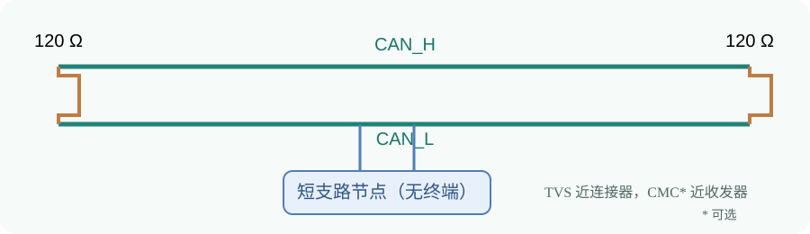

CAN ENGINEERING / CHAPTER 26
第26章 · 让终端、保护与隔离各守边界
硬件不稳定时，先问：反射从哪里来？瞬态在哪里回流？隔离栅有没有被别的铜线跨过？
26.1 两只 120Ω 只放在主干两端
高速经典 CAN 的线性主干应在物理两端做匹配终端，支线尽量短。每块板都放 120Ω 会过度加载总线。两只 120Ω 并联是 60Ω；测阻前应确保所有设备断电，并注意其他偏置/电子终端带来的差异。

动手实验：多装一个终端的后果
60 Ω
理想并联电阻模型，不含电缆与收发器输入阻抗。
26.2 摆放逻辑：TVS 靠连接器，CMC 靠收发器
不同问题的器件应在不同位置：ESD/瞬态 TVS（如需要）靠近线束入口，尽量缩短浪涌返回路径；可选共模扼流圈靠近收发器 CANH/CANL 引脚。NXP AH1014 第 8.1、8.3、8.9 节详细列出了这一布局原则。CMC 也可能引入漏感与振铃，不能无条件添加。
| 器件/结构 | 摆放与验证原则 |
|---|---|
| CAN_H / CAN_L | 成对、对称、尽量短，控制支线和不连续；避免与干扰信号长距离并行 |
| VCC / VIO 去耦 | 靠近收发器电源脚，低阻抗回流，按型号手册选容值 |
| 终端 / 分裂终端 | 只在主干端点；分裂终端两只约 60Ω 串联总计仍 120Ω |
| 数字地 / 收发器地 | 在同一非隔离侧保持低阻抗共同参考，避免随意割裂或串联地滤波器 |
纠正一个常见误解：CAN_H/L 不是固定“12V/24V 电源线”。TVS 的反向工作电压、钳位电压、寄生电容、能量额定值须根据收发器允许的共模与故障电压，以及整车/工业浪涌标准共同选型；固定规定 24V、36V 或 600W 没有普适性。
26.3 隔离的关键是完整的系统边界
隔离设计必须同时考虑数字信号通道与总线侧隔离供电。集成隔离 CAN 收发器并不一定包含隔离电源；不能把“磁隔离速度快”代替传播延迟、CMTI、工作电压、爬电距离、电气间隙和隔离寿命的核算。
- 非隔离板：MCU 和收发器使用合适的低阻抗地参考；不应无原则地分割地平面。
- 隔离板：跨隔离栅避免非预期的铜皮、测试点或走线桥接，隔离电源与隔离器的额定值要匹配。
- 保护回路：TVS 钳位路径、机壳地与逻辑地的连接策略要由系统 EMC 与安全要求决定。
26.4 从设计假设走向实测
- 校核芯片供电、VIO、控制脚和 CAN/CAN FD 速率范围。
- 断电检查终端总数、电阻值与隔离侧意外短接。
- 带电检查差分波形、共模与最不利线束的反射。
- 按应用规范实施 EMC/ESD/浪涌、温度、电源扰动和通信压力测试。
- 改动 TVS/CMC/终端后做完整回归，不以“一帧发送成功”作为验收。
元件数量不是可靠性的指标。先定义目标测试规范，再选择器件和回路。
技术依据
NXP AH1014，章节 7–9：终端、ESD、CMC 和 PCB；TI TCAN3403-Q1/TCAN3404-Q1 数据手册。具体器件以所选型号最新版手册为准。